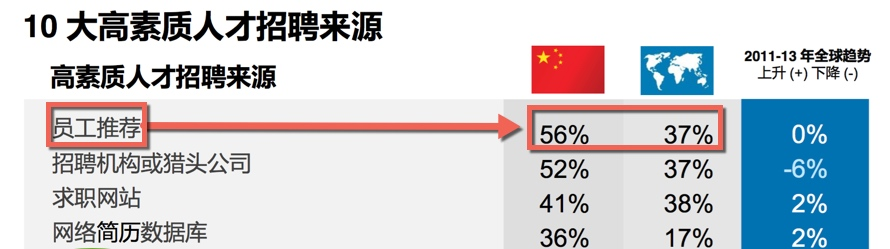
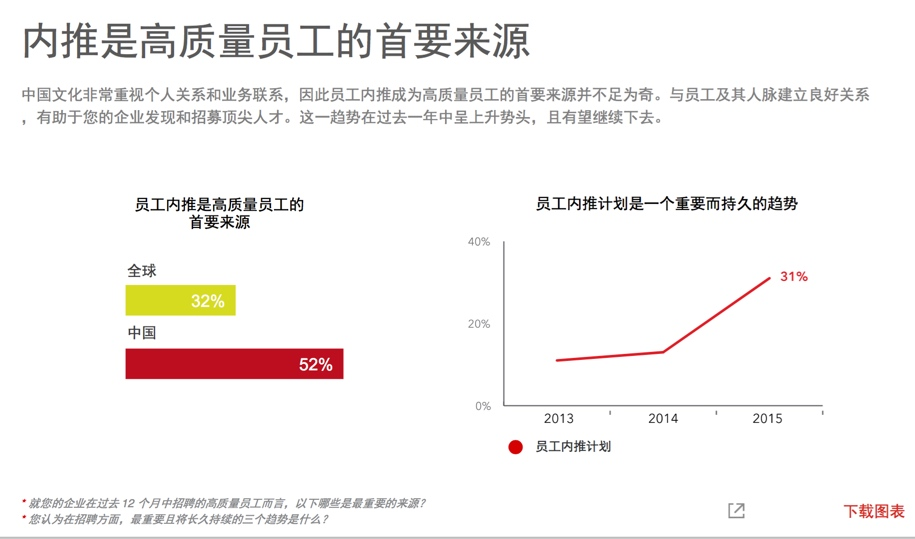

开放式招聘系列（五）：全员招聘——内部招聘
内部招聘，不仅促进规范内部人员的流动秩序，也是补充高素质人才的一种重要方式。
一些朋友问我，内部招聘是什么？ 是不是用人部门跟HR 说，那个人不错，给我调动我们部门吧就可以了呢？
是不是员工说，我已经得到另一个总监的同意了，他同意让我去他们部门做xx岗位，然后就调过去呢？
除非你乐意看到两个部门在拉锯，不然你得想想如何规范内部人员流动。
规范内部人员流动，有什么方法呢？我们来看看我今天的主角——内部招聘
内部招聘其实源于内部人员流动，为了规范内部人员的流动秩序。
不同风格的内部招聘
从招聘的角度，以往从业经历中，我操作过 2 种不同风格的内部招聘方式：
A：高度定制的流动：
这里的竞聘有一个起始条件：员工必须达到绩效标准才能得到晋升机会。
3个主要环节：选拔-培训-竞聘
绩效达标的人才能被人力资源部门选出来，参加下一步的培训；
企业先挑选出部门内绩效表现好的员工，然后这批在各部门里达到绩效标准的人，脱岗1-2周参加内部训练；进行短期的训练
这批人会在这个阶段接受短期的内训，参加企业依据上一级别岗位的素质要求开发的课程；训练后才到我们平时意义上的内部面试
组合式的结构化面试，出结果。日常工作的绩效表现和培训阶段的学习成绩也会成为面试的基数（影响结果/排名）；
如果说上面的是被选择来参加高度定制的流动
那么下面我说到的另一个操作则是自由流动
B： 自由流动
这里的岗位员工个人可以自由申请，公司尊重员工个人的选择。
企业在内部发布各个空缺岗位信息（开放岗位），员工根据此信息来申请；
申请的员工知会现直属上级，征求部门经理的意见；
同时该空缺岗位，招聘人员也会在外部渠道发布空缺职位招聘信息；
申请简历到达 招聘人员手上后，招聘人员根据简历情况，安排内外部员工参加面试
- 此时的面试，一般都会有内外部员工参加。
- 根据不同人员的表现，进行打分，同等条件下，内部员工优先适配；
为什么它是补充高素质人才的一种重要方式？
水往低处流，人往高处走
很容易看到，上面两种方式都能发现人才，因为有一个重要因素——人员的流动是倾向于往上流动。
它是内部人员发展的推进器。
两种不同风格，作用的方式不同：
大浪淘沙——挑出来高素质人才
机制里，推着你往前：
当同期的都参加过竞聘了，我们的员工会想：为什么我还没有呢？是个人哪方面表现不足呢，绩效应该还能提高吧，下次到我了吧？机制里，不出色就掉队：
发展不起来的员工，慢慢跟不上需求，慢慢就被新鲜血液淘汰。毛遂自荐——高素质人才跳出来
这个机制，提供机会。给个人选择的机会，意味着，一个开放的、 宽松的流动机会，只要有能力，申请了你就站在了展示的舞台。
展示后，如果成功，新的岗位，新的机遇。
而哪怕不成功，你还将能和内外部人才的对比，各位实力技能如何，我如何，我还需要哪些提升？内部面试官是很乐意与员工沟通，回去提升的同时，面试官一般也会关注到其中表现不错的员工——也会纳入人才库。
内部招聘，不仅有效地保留了人才，更让人才有机会与企业一同发展，为企业发展提供火力。
它还是一个吸引外部求职人员的信号灯
不重视人才发展的公司，一般你不会地看到内部清晰的挑选机制。
它也许会含糊其词/义正辞严：“对，你将能在我们企业得到很好的发展，你看这个通道那个通道。”
而通常有上面两种形式的选人机制的企业，还是更值得你去关注的。
为什么呢。因为它不是明显在说吗——“我给你机会要不要，要，那就来吧，我们的机会是可见的。”
目前实践如何呢
然而这一块的数据（来自Linkedin 2016中国人才招聘趋势报告） 和现实并不好看：

在国内大部分企业在「内部招聘」实践方面还是没有制度化流程化

如果你不想企业内部人员流动导致部门拉锯，想内部人员和企业一同进步发展，想更多地吸引外部人才，在人才竞争中迎头赶上，那么选一种机制吧。
哪种好操作呢
前者侧重服务企业发展，后者兼顾尊重人性。
前者侧重晋升，后者兼顾晋升与横向的流动
两种风格不同的实践，各有利弊。当然中间烦恼的事不少（可以讲一箩筐。。。。）
1）自由流动的弊端：
比如 我们看到尊重员工个人的选择也是一种尊重人性的做法：
个人如果申请开放岗位，有一种情况，我们不得不思考：
- 要么是员工觉出自己在部门内没发展或者不喜欢自己的部门，寻求好的发展机会。
- 要么是员工认为自己可能得到不同的发展，可以做出不同的贡献，得到提升的机会。
这个时候用人经理之间的协调。。。部门利益 个人利益 公司利益的协调。。。
此时倾向于哪方呢？既是公司文化也是部门管理的权衡了。
最终是要寻到其中的合力。
2） 高度定制的流动的弊端
高度定制的流动，凸显的是赛马而不是相马。然而它的另一面其实你还得思考：
比如
- 你所谓的赛马真的是我想赛马吗
你所谓的赛马是真的在赛马吗
既然是定制，那么也不是那么好定制出来的，也是需要前期投入更多的资源，比如 根据素质模型定制的选拔标准、各个环节的训练成本。。。
高度定制的流动，它更是偏向于晋升的一种流动。
对于快速发展的企业，那么自然推荐高度定制的流动。
＃欢迎联系与探讨 ，Arvin Yu 邮箱：yuyandong@outlook.com #
本作品采用 知识共享署名-非商业性使用-禁止演绎 3.0 Unported许可协议 进行许可。
开放式招聘系列（四）：全员招聘——内部推荐
内部推荐（又称员工推荐），是企业通过发动企业内部员工调用自己的人脉资源来帮助公司推荐优秀候选人的招聘方法。
为什么内部推荐
国情如此：

我们看2013 年的数据
高素质人才的招聘更具有竞争和示范作用，是招聘的典型故数据以此为主。
数据告诉我们：
1）高素质人才招聘更多来源于内部推荐——来自LinkedIn 2013 全球人才招聘趋势的数字

2）内部员工比猎头行动还要厉害——来自腾讯当年的电商部门
通过内部伯乐这个招聘渠道招到的人才占到整个社会招聘的 48%，资深岗位内部伯乐的贡献率也达到 35% 之多——这让和腾讯合作的猎头们‘叫苦不迭’，他们不知道竞争对手是我们的内部员工
2015年的数据 (图表来自linkedin )
显示中国企业在2015年中招聘到的高质量员工有52% 来源于内部推荐

2016年的数据，只会升，不会降低
一个是企业的招聘需求增加，二个是人才对自己的职业发展要求越来越高。
招聘慢了的话，这个高素质人才就跑到别家公司上班了，哪怕你是口头预定了offer 给他。
一个优秀的人才，在市场上不出 1 周就基本上被抢空了。
紧急用人的时候，HR 招聘人员动作再快（如果他没有做预见性招聘工作），也比不上一个部门全体来推荐的动作。
要知道某个狼性的企业有一年还特别 要求员工过完年上班的时候，必须要给公司推荐 xxx 个人的。
显而易见，高素质人才的招聘本来就是资源的激烈竞争，内部招聘无论是成本还是时间上都是一个很霸气的存在——前提是你用好它，那么如何做呢？
内部推荐实施
从下图 Linkedin 数据来看，大部分的国内企业的内部推荐的有效性还不到全球平均水平 ，可见（ 32%——> 39%——> 65%）仍然有很大的提升空间，能用来提高内部推荐的有效性，为企业高速发展提供更有效的支持。

实施的时候有哪些节点呢以及要注意哪些？
一般节点
- 制定奖励政策
- 发布悬赏职位名单
- 制作内部推荐登记表，方便员工发送或打印提交 HR 及汇总
- Weshare 网络和线下公告，比如 公司通勤车、茶水间、邮件
- 推荐进度反馈
- 内部推荐问答
具体实施方法其实还有很多
- 分类大法，优秀的人周围也是聚集了更多优秀的人。比如统计出过去 12 个月里招聘过来的表现优秀的员工，重点让他们来推荐。
- 在招聘后，入职阶段。。。。
特别关注点
内部推荐项目，详细定义激励的要素及操作的流程。
- 在试运行的过程中，调查参与推荐的员工， 问他们这个项目里哪些方面对他们的参与有促进作用？哪些方面还需要提升？并询问他们期望得到的奖励和激励的列表，其中哪些部分尤其让他们感觉到兴奋？
- 你也可以调查哪些没有参与的员工，哪些方面阻碍了他们参与推荐？
- 在奖励和激励的列表里，哪一个可能会提升他们的参与度？
- 走出去与其他公司 HR 进行探讨，鉴别和分享最有效或最新的方式，激励员工内部推荐
其实内部推荐，基本的还是离不开全体员工参与的意愿。如果不能长效地做，只是打算试探、试试这个渠道/方法有没有效果，那么员工的意愿就会受到打击了——他也不是天天有朋友在找工作，也不是每一个朋友他都会推荐来的，企业在这一块如何做呢？
a）要做出示范效应
示范给大家知道，比如这个员工一直有推荐，是不是给定个伯乐勋章呢，弄个定制的铭牌呢？该宣传的就要宣传。比如奖励的信息要让全体人员知道吧，鼓励的气氛要营造吧。
b) 要做水磨功夫
没有合适岗位的时候也要跟进员工推荐的简历，哪怕这个简历不合格不合适，也要跟进，该感谢的感谢，该保存进人才库的保存进去。可千万别弄个不更新的人才库。
内部推荐补充：
高端岗位还可以深入使用
如果企业规模小，用人急，怎么办？这个方法有用吗？
它们其实都要指向——A级人才
行业分布应该懂吧（又是一篇长文。。。）
#欢迎联系与探讨 ，Arvin Yu 邮箱：yuyandong@outlook.com #
本作品采用 知识共享署名-非商业性使用-禁止演绎 3.0 Unported许可协议 进行许可。

开放式招聘系列（三）：全员招聘——面试体验
招聘也是企业的一种销售——将企业“销售”给合适的候选人。
求职者其实是公司潜在的客户，好的体验和坏的体验带来极不同的结果。
我们来看两个对比：
1）坏的招聘体验的影响，只是大部分的招聘人员未觉察或者不愿如此察觉。
昨天看到一份数据显示：
有 58% 没有收到目标公司答复的应聘者，较少可能购买该公司产品；更惊人的是，面试后没有得到结果反馈的人中有65% 也有这样的倾向。
因为没有看到这份数据的调查样本范围，而且来自一个提升招聘体验的公司员工。这份数据还要谨慎看待，不过它倒是提醒我们一个基本事实：没有人喜欢坏的面试体验。
2）好的招聘体验是什么效果呢？我们来看一份好的招聘体验带来的效果：
In fact, 80% of people who have been interviewed and rejected report that they would still recommend a friend apply to Google.
大意：谷歌面试过和拒绝过的候选人中有80% 的候选人还是会推荐他们的朋友应聘谷歌的职位。
谷歌还有一个实践分享，它说：
Google wants interviewing to be part of every Googler’s job
谷歌希望面试成为每个员工职责的一部分。
然后在文章中，它列出了谷歌招聘团队对面试官们的培训和支持的方法，以此达成让面试工作可以成为每一个谷歌人工作中的一部分。
这样我们看到，谷歌在招聘实践中很重要的一部分，其实是全员招聘来提升面试体验。
为什么全员面试
为什么这么做呢？
谷歌
谷歌为什么这样做呢？它说了 2 个方面的原因：
1） 相比公司职位与福利，候选人关更注与用人部门面试官的沟通
谷歌内部调研显示，在招聘体验上，候选人提及最多的是他们与面试官的交流——对大部分候选人来说，这方面的重要性高于岗位类别、福利、也高于与招聘人员的交流；
谷歌要更突出部门面试官在面试过程中的作用，不仅是因为候选人重视，也因为
2）企业在面试中不仅能找到合适的候选人，还有助于巩固企业文化，有助于增进同事情谊，也还可以增强现有员工对公司的归属感比如当员工对面试决策能发表个人见解，能够增强团队成员的归属感。
中国企业
那么在国内情况如何呢？情况其实和谷歌的内部数据一致。
Linkedin 的一份数据显示：面试经历中中国人才看重的最重要的因素也是与面试官的交谈，特别是用人经理的交谈， 招聘负责人反而是其次。

面试体验如此关乎人才得失，你也注意到了吧，这个体验的提升并不只是招聘人员工作，还得更多的部门参与进来，那么如何呢？
继续走老路吗？还是换种姿势拥抱变化呢
如何全员招聘？
谷歌继续分享了它们的训练面试官的实践，感兴趣的点击链接可见具体内容。过于面试官的训练，我会另外一篇文章来介绍。
在我看来，为了提升招聘体验和加快招聘效率，还有很多做法：
- Team 展示—— 团队成员、团队气氛 、团队间交流风格
- 多成员一起参加面试，投入到面试环节——面试并一起做出录用决策；
- 投入到新人 Onboarding（接待、指定同事指导 ）
- 投入在试用环节
以上是全员招聘的一些实践环节，范围其实很广。
而之所以这么强调面试体验，是因为无论如何重视招聘体验都不为过。
在 Linkedin 2015 年人才趋势报告的数据也揭示：

再次强调，好的招聘体验能带来更多的候选资源。
80% of people who have been interviewed and rejected report that they would still recommend a friend apply to Google.
被谷歌面试过和拒绝的人员中，有 80% 的人说他们会推荐朋友来申请谷歌的工作。
除此以外，我所说的全员招聘还有两个很重要的组成部分：「内部招聘」 + 「内部推荐」
我们在该系列继续探讨。
# 欢迎联系与探讨 ，Arvin Yu 邮箱：yuyandong@outlook.com #
本作品采用 知识共享署名-非商业性使用-禁止演绎 3.0 Unported许可协议 进行许可。

拥抱不确定
看不清未来的时候，有些东西曾经这样启动过。
2015年中，摘抄了部分书的句子，当时发在微博中，没打算发文，今天看笔记，看到它们
觉得还是挺有意义的。
在的历史里，它们伴生于“错误”中。 看不清未来的时候，有些东西曾经这样启动过。
一边是「错误」文化的重新框定，一边是「错误」并不是静止，而是动态。并且我们处于一个不确定的世界。
处在这个世界，没有行动是单面向的。
模糊不确定时——这样行动
- 丹尼尔.丹尼特<第三种文化>
当自然母亲要设计一个系统时，那是“多多益善，大家来开个晚会，然后不知怎么着，我们就造出了这个东西”这是个非常不同的组织结构。
- 格尔德.吉仁泽在《风险与好的决策》
不同行业、群体都有各自的错误文化。一个极端是消极的错误文化，人们不敢犯任何错误，无论是有益还是有害。一旦犯了错误，他们就会尽力掩盖。人们不可能从错误中学习、发现新的机遇。另一个极端是积极的错误文化，所有错误都是透明，人们敢于犯有益的错误，并能从有害的错误中学习
- 戴维.多伊奇 《无穷的开始——世界进步的本质》
易谬主义让我们不要寻求权威，而是承认我们可能一直在犯错，并努力纠正错误。我们通过寻求解释来做到这一点，好解释是难以改变的，改变细节会毁掉整个解释，这是科学革命的决定性因素......而实验检验不是。
易谬主义者认为，就算是最好、最重要的解释性理论，在真理外也包含着缪误，因此他们随时准备好修正理论以做到更好。它的逻辑是，人不仅要试图修正过去错误观念，还希望在未来能发现那些迄今为止还没有人质疑或认为有问题的错误观念，并且修正。因此易谬主义是知识开启无限增长之路的关键」
- 唐纳德.A.舍恩《反映的实践者》
他以草图和空间行动语言为媒介，通过自己的做法展现出选址上的建筑物，这些做法也是一种实验。每个做法的结果，都是依照一种或一种以上设计词汇的观点，加以描述和评估。前后做法之间息息相关，而且每个做法都会创造出新的问题，等着设计者加以描述和解决。
奎斯特的设计方式就是找出一系列的做法、结果、因果关系、评鉴和进一步的做法。
- 丹尼尔.T.威林厄姆 《为什么学生不喜欢上学》
豪斯能从记忆中快而准确地获取正确信息，这些信息年轻医生也有，只是他们想不到而已。专门技能体现在犯的错误上。专家是”优雅地犯错“，专家在得不到正确答案时，那个错误的答案通常是个最佳的猜测。豪斯在做出正确的诊断前会花一点时间，但是他的猜测总是有根据的
- 邓肯.J.瓦茨《六度分隔》
当一个公司启动一个新的大项目的时候，参与的人们其实都还不知道这个项目如何进行。在变化迅速的行业中，从汽车到软件，在生产开始之前就完成设计的情况是没有的，项目效率的评估标准也是随着项目的进展而逐渐形成的。而且，没有一个人在整个项目中的地位和作用是事先确定好的
每个人都是从自己最初的、 一般的理解开始进入项目，并在随后和项目的其他参与者的反复交流中逐步明确和细化自己的职责。
#欢迎联系与探讨 ，Arvin Yu 邮箱：yuyandong@outlook.com #
本作品采用 知识共享署名-非商业性使用-禁止演绎 3.0 Unported许可协议 进行许可。

开放式招聘系列（二）：招聘班底的速成
策马奔腾，且先食(si)之.
本文主要讲的是出类拔萃的招聘人员行为速成——行为培养。
招聘行为养成
开放式招聘系列第一篇里，我们提到了出类拔萃的招聘人员日常会做以下的行为：
- 他们快速、持续、自我驱动地学习
- 他们深入理解企业业务
- 他们关注招聘质量，完成招聘后跟踪分析入职表现和满意度
- 他们能有效说服用人部门面试官，并有效合作
- 他们善于把握招聘优先次序，关注重点岗位和候选人
- 他们优先搜寻被动求职者
- 他们聚焦于与候选人建立信任关系
- 他们主动建立个人的人才管道
- 他们有特别的人才来源、渠道
招聘班底上，我们暂时不讨论人员的分工，我们先来讲人员基本功的练习和养成。
上面的行为，实质上就是一些规范的动作，如同武术里的套路。
（一些更基本的本篇未包括进来，比如简历筛选、这一类工作慢慢由电脑程序取代。）
我们的目标是：练习规范动作，得到反馈。坚持动作练习，得到行为习惯。
有没有最好的方法呢？我不清楚，我倒是知道时间宝贵。并且我们还知道，管理大师詹姆斯.马奇 提过学习在三个学习做什么、如何做以及学习期盼什么三个层面同时发生。
因为学习在这三个层面同步进行。所以寻求最佳选项很难找到，三个层面的适应会相互干扰。
所以不用纠结于是否是最好的方法，再多的方法，不如动起来。
其实不论是任何行动，我们人类即希望能找到最好的方法，又希望能尽快达成。然而事实往往不会如此。
因为想法再好，以下因素还会使我们发生行为瘫痪
或者高估了自我改变带来的收益；或是认知资源投入不足；目标意愿不强大；或者高估了自己的能力与改变自我的速度；
或者采取了错误的策略：总是在自我改变的初期投入过多资源，热情满满，在艰难的低谷期，却资源严重不足。
那么如何能尽早行动起来？
我们今天要用到一个不需要改变认知方式的工具，来帮助我们养成新的行为。
用 woop 来养成好行为
WOOP 是一个对目标追寻更加有效的自我调节策略。
WOOP，是德国汉堡大学心理学家彼得 · 戈尔维策（Peter Gollwitzer）和 他的妻子加布里埃尔 • 厄廷根（Gabriele Oettingen ） 美国纽约大学及德国汉堡大学心理学教授, 的共同“作品”， 心理对照与执行意图联合起来，帮助人们实现目标。
当初厄廷根教授为了便于推广这个策略，起了个简单易记忆的新名——WOOP.
主要有两个心理工具构成：
【心理对照】，帮助个体承诺于高期望的目标，放弃低期望的目标，聚焦个人资源。
【执行意图】能帮助解决目标努力过程中的意志问题，缩小目标意向和实际行动中的鸿沟。减少行动瘫痪。
心理对照和执行意图分别作为目标设定和目标执行阶段的自我调节策略，能有效地帮助个体更成功地实现目标（Oettingen 2013）.
应用在招聘行为的培养方面，自然也会帮助我们去启动行为。
WOOP 示例
具体的步骤可以参考我前面的一篇文章
之前我们提到 优先利润产出部门、岗位的招聘能够增进企业收入，同时它也是最有效同时也是最小成本的招聘策略。
所以，我们的目标自然是最先要重视这块意识和行为的培养，如何做呢，WOOP 如何 助力呢？
粗略可见到：
愿望/目标（Wish） : 他们把握招聘优先次序，关注重点岗位和候选人;
成果（Outcome）： 重点岗位人员快速到位，适应团队，进入工作状态；
障碍 （Obstacle）： 不知道优先次序
计划 （Plan） ： 了解公司的收入模式 收入节点；
那么物化后就是一个执行意图：
如果拿到招聘任务时，我不知道该招聘空缺的优先次序，那么就整理一份公司的收入是如何来的业务流程资料在内部分享。
再比如 当我方结束新岗位招聘的时候，我们会跟进岗位人员的适应情况，既通过新人的眼睛来看公司，也需要上级的眼睛；
一起来提高招聘的投入、研究；一提高招聘的质量；以备下一轮改进。
这里的障碍是：用人领导不愿意反馈？ 还是新人不愿意说，怕说错？……
套入「如果……那么……」
通过以上的分析，提醒自己当。。。情境时。。。可以做什么。。。
如果实践了，遇到了困难，我乐意和大家探讨。
小结
基本动作的练习就是基本功扎实与否的一个体现。
一个团队里知道如何让自己的各个成员的基本功都扎实了，我们的班底就好扩大了；
（预告：下一篇 开放式招聘系列（三），我们来聊聊全员招聘）
# 欢迎联系与探讨 ，Arvin Yu 邮箱：yuyandong@outlook.com #
本作品采用 知识共享署名-非商业性使用-禁止演绎 3.0 Unported许可协议 进行许可。
Copyright © 2015 Powered by MWeb, Theme used GitHub CSS.